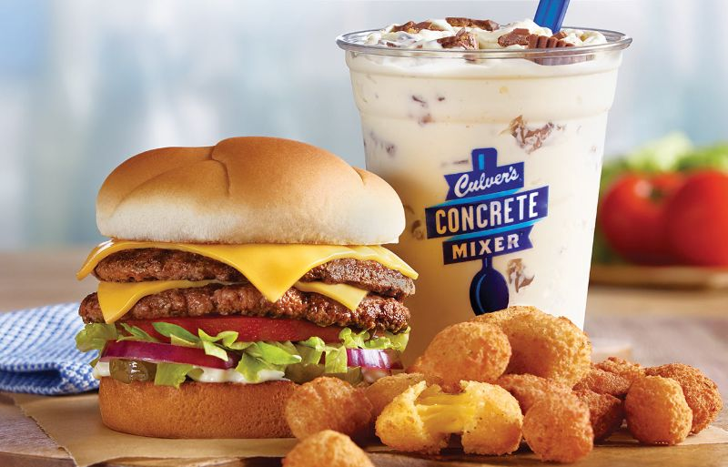
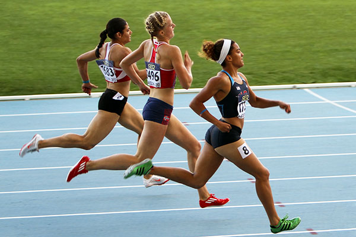
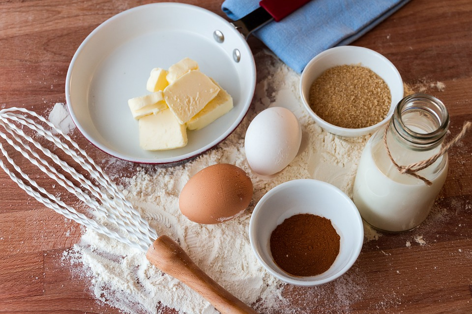
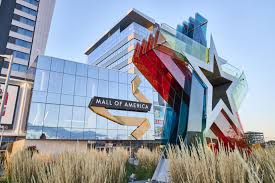
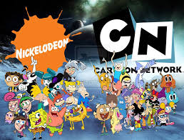
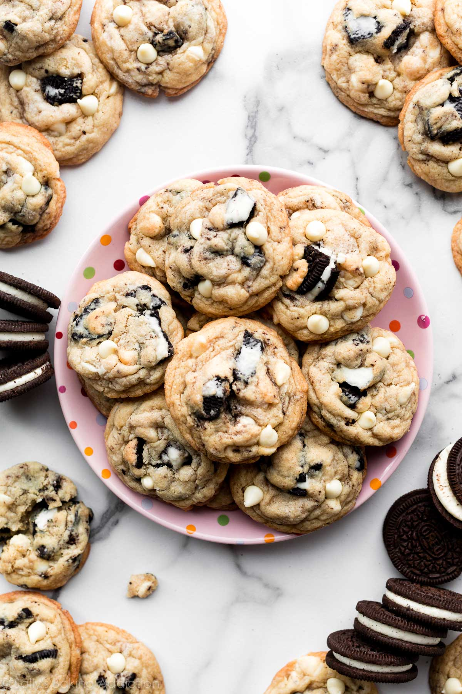
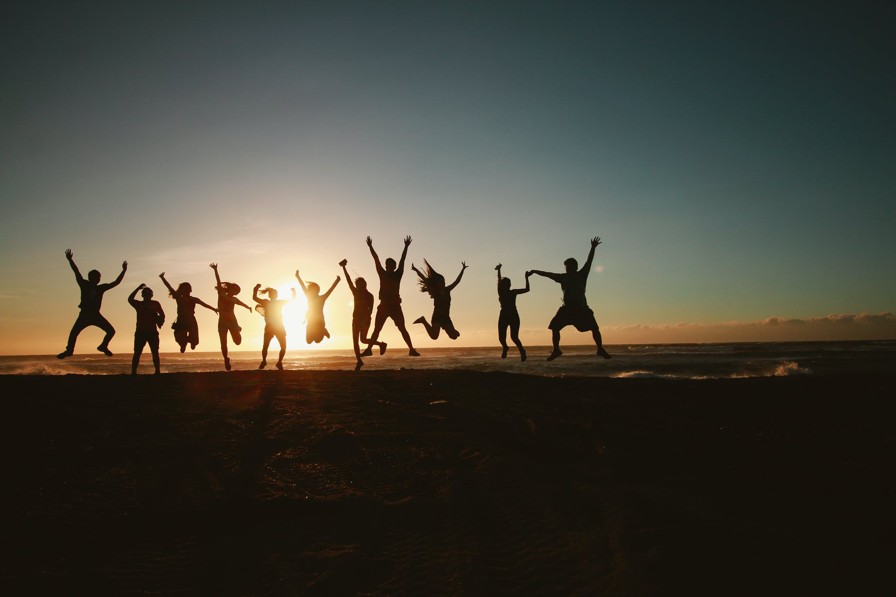

My favorite genres are mostly R&B, pop, rap, and a little afrobeats. Most genres of music are good; I'll pretty much listen to everything. The worst genres, in my opinion, are rock, heavy metal, and country. My favorite artists are SZA, Beyonce, Frank Ocean, Giveon, Future, Ed Sheeran, Tems, Doja Cat, Bruno Mars, and so many more

Culvers is the best fast food resturant in my opinion, there food always hits, my go to order is Cripsy chicken sandwich with only cheese, lots of bacon bits, mayo, and ketchup the chicken and bacon well done, extra Cripsy-in a meal, but instead of fries, get cheese Curds to "drink" a small cookies and cream plus cookie dough pieces in a concrete mixter
I love playing sports. I've tried out lots of them ever since I was little. When I was little, I did gymnastics, basketball, and track. My favorite sports now are football, tennis, and basketball. Even though I like playing sports, playing for a team is pretty overwhelming for me. I value peer and coach validation, so I prefer playing for fun with my family. Despite the fact I'm running track right now

I enjoy biking because I love the adrenaline. I enjoy going biking with my siblings around the neighborhood, biking to get food, and pretty much everywhere in the summer. On a perfectly sunny day, 50 + degrees, along with a slight breeze, is the greatest time to go biking.
Comedy/Sitcom movies are the best types of movies, action is a close second, and my personal favorite is horror movies. Watching movies take sus away from reality and our real-life problems, it's something to think and talk about with others.

I love shopping when I'm not spending my own money; I work too hard to spend my own money. When I actually have money, it just magically flies away when I dont out some away to save or invest. But I love going out, mostly to the Mall of America, the outlet mall, walking around with friends to shop for dresses, clothes, shoes, even food, whatever. Even if I don't end up buying anything. I also like the idea of going shopping, it can be the most random items. It also aligns with running errands.
I enjoy baking pretty fun, my favorite things to bake is cornbead and brownies, sometimes from scratch. I love to lick the pan after transferring the mix into the oven.

Nostalgia will be the death of me. When I was younger, I loved watching Nick, Disney/Xd, Qubo, PBS Kids, Cartoon Network, I watched em all. My favorite shows were Dora, Daniel Tiger, Yo Gabba, and so many more. When I was younger, I actually liked reading books. I enjoyed Storyline online, Dogman, Diary of wimpy kid, and some Judy Girl, and so many more. I used to make slime out of literally everything. Along with Oobleck. Don't get me started on music, Ayo and Teo, prime Fortnite, subway sufers, etc. My Nintendo Switch.
Hershey's cookies and cream chocolate, Kit Kat, Twix, Kinder Bueno, candy apples, concert mixers, frappes, I can't get enough

Every hangout with my friends is another adventure; they are the best. The mall, fast food run, the movies, or whatever we are doing is a whole other adventure.
test 123